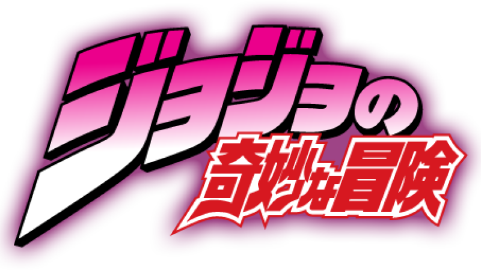

Os Stands são manifestações físicas da energia vital de uma pessoa, geralmente representados por figuras únicas com habilidades sobrenaturais. Eles surgiram na série JoJo's Bizarre Adventure e cada Stand reflete a personalidade, força de vontade ou traços do usuário...



STANDMASTER
CARDS
Descubra tudo sobre os Stands e seus usuários
Star Platinum
Stand poderoso com força, velocidade e precisão extremas. Capaz de parar o tempo por alguns segundos.
The World
Similar ao Star Platinum. Possui força física incrível e a habilidade de parar o tempo.
Crazy Diamond
Pode restaurar objetos e pessoas à sua forma original, curando feridas ou consertando coisas.
Killer Queen
Transforma qualquer objeto em bomba. Tem habilidades secundárias como Sheer Heart Attack e Bites the Dust.
Gold Experience
Dá vida a objetos inanimados. Seus golpes fazem o inimigo sentir danos com percepção distorcida do tempo.
Tusk act 4
Usa o poder da rotação infinita para perfurar barreiras e ignorar regenerações. Um dos Stands mais poderosos.
Ball Breaker
Usa rotação para causar envelhecimento e dano espiritual. Surgido com a técnica da Corrida de Cavalos.
D4C
Permite viajar entre dimensões paralelas e trocar de lugar com versões alternativas de si mesmo.
Soft and Wet
Usa bolhas para roubar propriedades como som, fricção e umidade de objetos ou pessoas.
Wonder of U
Manipula calamidades. Quem o persegue é afetado por acidentes inevitáveis.